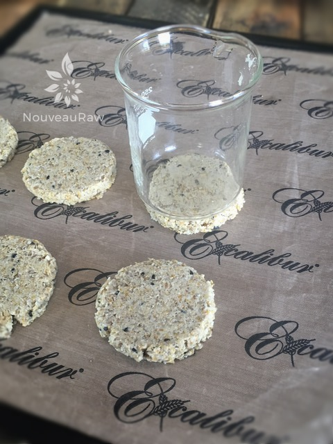

Black Sesame Wasabi Cracker

~ raw, vegan, gluten-free ~
Aaaaah wasabi! This isn’t your typical back of throat burn, this heat comes right through the nose!! It has a sharp flavor that’s a bit hotter than the familiar white horseradish.
Wasabi powder provides a nice change of pace from chiles. It provides heat, but has more of an herbal overtone and dissipates more quickly. You can also use it as a substitute for Dijon mustard, or as a flavoring in home-made mustards.
Many of the “wasabi” powder and paste products that are available in supermarkets (and even some restaurants) contain only very little or no real wasabi at all and are made of colored horseradish instead. This is because the cultivation of real wasabi is relatively difficult and expensive.
I hope you enjoy exploring new flavors. Please comment below and let me know if you try them. Many blessings, amie sue
Ingredients:
Yields 26 crackers ( 1 Tbsp cookie scoop)
- 2 cups raw almond flour
- 1/2 cup black sesame seeds
- 1/4 cup ground flaxseeds
- 2 + Tbsp wasabi powder (you decide how strong you like it)
- 1 tsp Himalayan pink salt
- 1/2 cup water
- 2 Tbsp cold-pressed olive oil
- 1 Tbsp toasted sesame oil
Preparation:
- In a large bowl, whisk together almond flour, ground flax, sesame seeds, wasabi powder, and salt.
- In a small bowl, whisk together the water, sesame, and olive oil.
- Combine wet and dry ingredients and mix well until dough forms. I like to use my hands for this part.
- To make individual crackers: use the 1 Tbsp cookie scoop.
- Pack it with the dough and wipe off the excess.
- Drop onto either a teflex sheet or parchment paper.
- Use a glass or container that has a completely flat bottom that is about 4″ in circumference. It helps to dip it in water.
- Press down on the dough ball to flatten it.
- Gently remove from the bottom of the container. (I used a dough scraper).
- Place each cracker on the mesh sheet that comes with the dehydrator.
- Dehydrate at 145 degrees (F) for 1 hour, then reduce to 115 degrees (F) for about 8+ hours or until completely dry.
- Once done and cooled, store in an airtight container.
Culinary Explanations:
- Why do I start the dehydrator at 145 degrees (F)? Click (here) to learn the reason behind this.
- When working with fresh ingredients it is important to taste test as you build a recipe. Learn why (here).
- Don’t own a dehydrator? Learn how to use your oven (here). I do however truly believe that it is a worthwhile investment. Click (here) to learn what I use.

© AmieSue.com